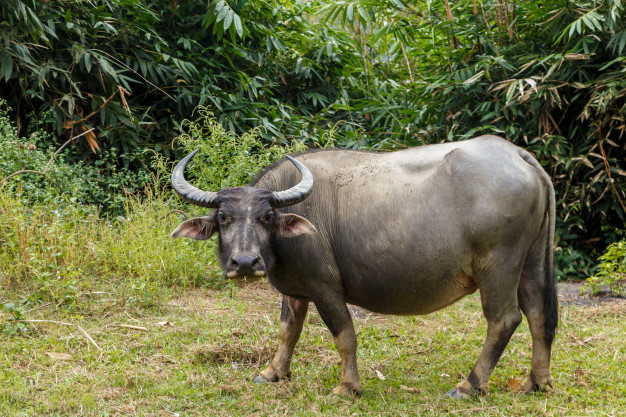

Trâu
Trâu là một loài động vật thuộc họ Trâu bò.
Trâu nhà hay còn gọi là trâu nước là các loài trâu đã được con người thuần hóa. Chúng đã được lai tạo, chủ yếu là ở châu Á từ hàng ngàn năm để sử dụng bởi con người. Chúng được nuôi sử dụng như một đại gia súc chủ lực trong việc lấy sức kéo và sản xuất sữa và thịt.
Hai loại này được ghi nhận, loại sông và các loại đầm lầy. Trâu nhà gồm hai loại trâu sông (River buffalo) và trâu đầm lầy (Swamp buffalo). Chúng có chung nguồn gốc từ trâu rừng nhưng khác nhau về số lượng nhiễm sắc thể. Do quá trình chọn lọc và sử dụng mà ngoại hình và khả năng sản xuất của hai loại hình trâu có những đặc điểm khác nhau.
| Phân loại khoa học |  | |
|---|---|---|
| Lớp: | Thú | |
| Bộ | Guốc chẵn | |
| Họ | Trâu bò | |
| Phân loài | ||
|
||